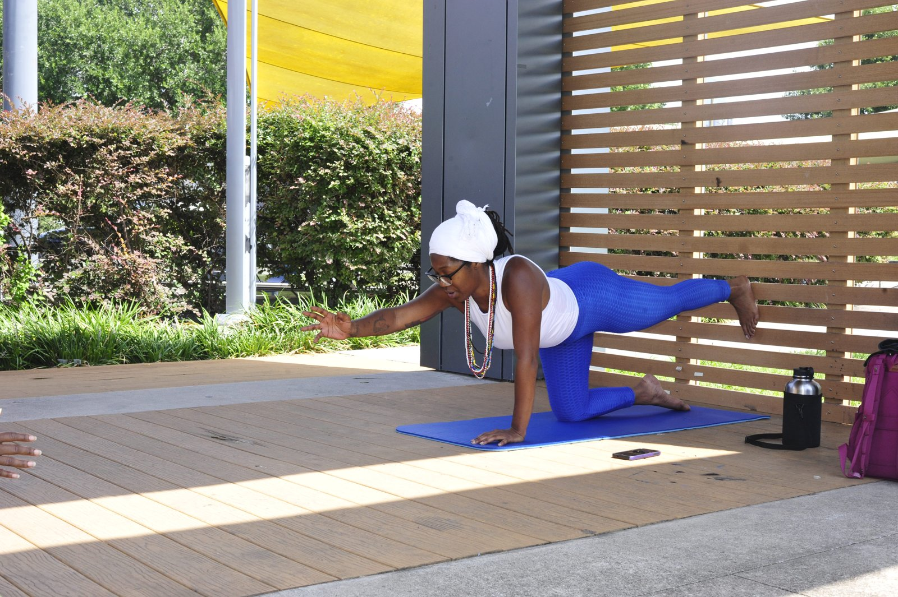
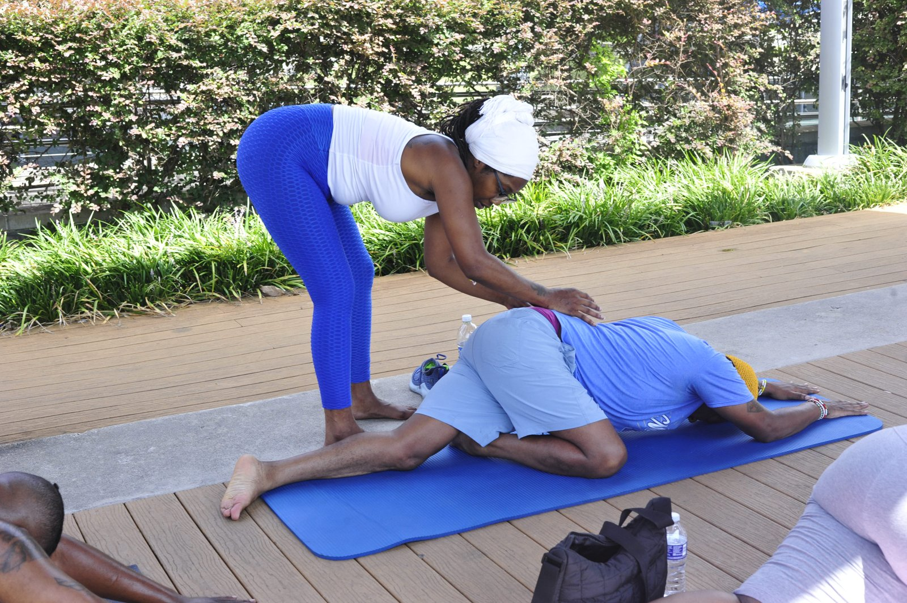
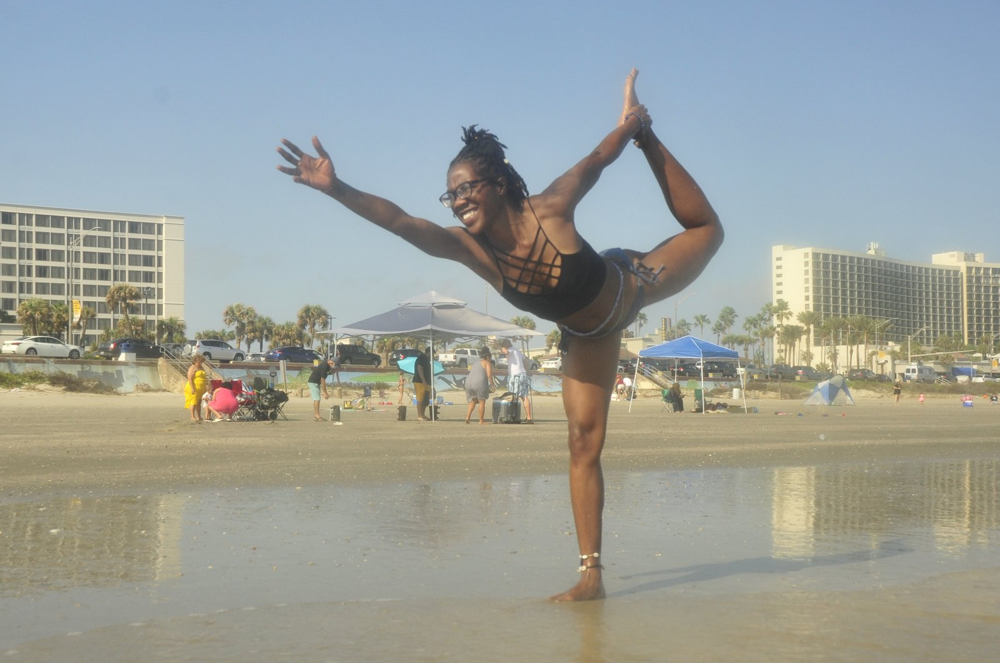
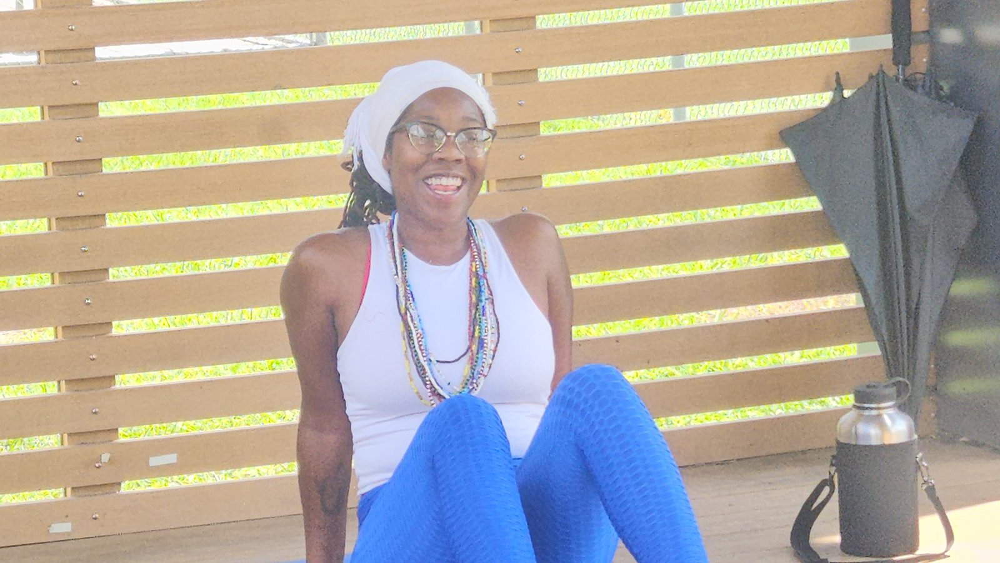

Community · Profile
Aisha K. Shahid says you’re right on time
For six years she has taught Sunday mornings in Third Ward’s oldest park, and in between she learned to hold people in water. A profile of a practice built around the breath.

The class is billed for ten o’clock. It starts at twenty past, on purpose.
“I say 10 o’clock, but we start at 10:20,” Aisha K. Shahid told the people on their mats one humid Sunday in July, under a pavilion in Emancipation Park where she had moved the class off a wet ball field. “I want to give people a little bit of time.” And if you come later than that? “Even if you come at 11, we ain’t done until 12.”
That is most of what you need to know about Empowerment Yoga Sundays in the Park. Breathwork first, then an hour of flow, then a sound-bowl meditation. All ages, all levels. She has been teaching in this park since at least the summer of 2020, the year she founded her community organization, and her Eventbrite page counts eight years of classes and gatherings and some 1,500 people through them.
The breath first
Every class starts at the nose. That morning she taught alternate-nostril breathing: one thumb closing one side, a slow breath in, a hold, a slow breath out the other. “You are in control of your breath,” she said. “You’re in control of your life.” Then, more quietly: “I’m talking to myself, too.”
She came to the mat by way of the track. “My health and wellness was in the forefront as a former athlete around track and field growing up,” she said on a Houston radio program last November. She ran in college at Prairie View as a walk-on, studied kinesiology and expected to coach. Then, as she put it, “I found breathing and meditation. And I started utilizing these things as tools to help me.”
Her cues are plain and practical. “Do not hold the breath. Whenever you’re feeling a blockage or a tension, you want to inhale and breathe into it.” She talks to the person who sits at a desk or drives for a living, and she runs each sequence twice, because, as she asked the class, “Repetition makes what? Better.” And always the reminder to go easy: “I don’t want y’all pulling nothing out here.”

Into the water
The other half of her practice happens in a pool.
A few years ago she sold her car, let go of her apartment and moved to Mexico for two years. There she tried a temazcal, the Indigenous sweat lodge, and a session of aquatic bodywork she had first seen on Facebook. She was skeptical. She cried through it, then trained in it.
“Water is from which we came, we came from water,” she said on the radio. “We were born in water and that is our first home.” By her count she has given almost 200 sessions in Houston since 2022: men and women, pregnant and postpartum clients, people in grief or in the middle of a big change. Some say very little going in. “It does come out in the water,” she said. “For those who need to release, they do.”
“We were born in water and that is our first home.”
One July day in 2023 she brought the work to an apartment courtyard a few blocks off Emancipation Avenue, near the downtown soccer stadium. The pool sat at the bottom of a well of brick and stone, with balconies rising seven stories or more on every side. She floated one person after another in the water while a flute played at the edge. The stone carried the sound up through the whole building. One by one, residents stepped out onto their balconies to watch what was happening in their own pool, and when the music paused, some of them applauded.

What she tells people
The breath and the water meet in what she asks of people, which is mostly that they ease up on themselves.
“One of my favorite affirmations I always say is, you know, I’m doing my best every day,” she said. “My best might look like 50 percent. You know, but I did that.” And: “Rest is also productivity.” The day after her organization’s awards gala last year, she spent the whole day at a spa, and she didn’t work the Monday after either.
That July Sunday she closed the class the same way. “Keep showing up for yourself. You’re never late. Whenever you show up, you’re right on time.” Then, as everyone rolled up their mats: “Practice is a process.”
“You’re never late. Whenever you show up, you’re right on time.”
The ground matters. Emancipation Park was bought in 1872 by formerly enslaved Houstonians who wanted a place of their own to celebrate Juneteenth. A century and a half later, on Sunday mornings, a woman under a pavilion there asks whoever shows up to take two hours for themselves.
Off the mat

Off the mat she runs All Neighborhoods Powerfully United, which she founded in the organizing that followed George Floyd’s murder in 2020 and is now registering as a foundation. Its Black Gala Award Show, held for the third time this October, honors Houston organizers who rarely get recognized. She would tell you it is all the same work. “When we start loving ourselves, we can begin to heal ourselves,” she said. “When we get to heal ourselves, we can really become a community.”
This story is reported from the writer’s recordings of Aisha K. Shahid’s Sunday class in Emancipation Park on July 12, 2026, her interview on a Houston radio program on November 11, 2025, her own published listings and posts, and the writer’s photographs and notes from 2020 to 2026. Frankie Mohammed has photographed her work since 2020 and played flute at her classes and water sessions, including the courtyard session described here.